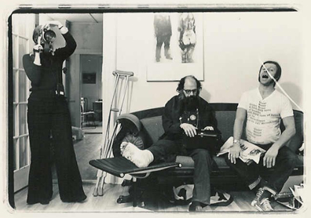
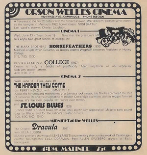

 Long before video, 1973, my friend Ilene H. Lang made a movie about me while she was a student at Harvard Business School and was taking an elective at MIT with Richard Leacock. Miraculously, we converted her film stock to video and then mysteriously, converted it for the Web! It's a little bleached-out but you see what I looked like when I was thirty-seven, and more important, you see and hear Allen Ginsberg and Peter Orlovsky singing. Many of the pictures in the movie are in my 1974 book, Elsa's Housebook.
 (the original advertisement for the Orson Welles in the Real Paper, June 13, 1973.)
{kind=link}
Click here to see the invitation for a midnight party at the Orson Welles, June 16, 1973. Punch was served in the lobby.
{kind=link}
Here are the two movie files available for download. They are quite large and so may take awhile if you are on a slow connection. The movie is about five to seven minutes long to watch.
NOTES: On Making a Movie.
(Written for the premiere at the Orson Welles movie theater, a wondrous place in Cambridge in the sixties and seventies.)Some people have always wanted to make films, from as long as they can remember. Not me. I never thought of it until last year when I picked up a camera and zoomed enough to make myself dizzy. Then I wanted to learn how to do it, and so I've begun, with my story about Ellie. It doesn't tell her history, which happened before I knew her. It tells about her as I know her, which is pretty much in her house doing her pictures. We never talk technical photography; we talk about the photographer and her people. And I've realized that Ellie is different from most photographers because all her pictures are of people whose names she knows. She is interested in them, and she respects them. I wanted everyone to know this.
One of the problems we had in making the film was that we are such good friends. We kept talking to each other about what was happening. Ellie would look into the camera, and I would look back at her. This distracts many people because they wonder what she's saying. Actually, you can read her lips - she says, "It's AWFUL!" And a lot of it was. I broke my leg. I was too excited to turn on the tape recorder while Allen and Peter were singing. I ran out of film. But most of it was GREAT. Beautiful photographs. The unexpected visit of Allen and Peter. Starting out every morning with almond croissants. Capturing something that wouldn't have existed if it weren't for a camera. Having such a good time.
On Being Ilene's M*A*T*E*R*I*A*L.
Well, it was an ego trip, having Ilene decide to make a movie about me. I had one strong feeling. I wanted the film to be useful. I wanted it to have content. Otherwise, I decided right away that it was Ilene's movie. I would keep quiet and let her do what she wanted to do. Film what she wanted to film. It wasn't so easy. There were times when I wanted to know WHY --- or WHY NOT. Why are you doing THAT. I wasn't used to being passive and letter her decide when to use her camera or to turn on her tape recorded. It was odd being in a situation where I had absolutely no control over what would be recorded. WHAT WOULD BE KEPT. I am used to using MY camera on other people and to having almost total control. So, self-consciously, or at least, purposefully, I trusted Ilene. I put myself in her hands. I kept on saying to myself, well, it's all MATERIAL. That's a wisemanmotto I learned from Mark Mirsky. You have to USE all of life. You can't shrink from any of it. I always remember it when I hesitate to take pictures of people grieving at funerals, people making love, people quarrelling, praying, in other assorted private moments. And so here I was saying the magic words to myself. Bolstering in this instance, my ACCEPTANCE of the camera focused on me rather than my courage as photographer.
It worked out fine. Ilene didn't make a cartoon and I am touched/impressed/grateful.
Ilene H. Lang
Elsa Dorfman
Cambridge. June 16, 1973
Where Are We Now?
Ilene made this movie while a student at Harvard Business School. She became an entrepreneur and high-tech executive. Currently she is an Advisor to early stage high-tech companies and a Board member of Adaptec (storage solutions), Zoots (revolutionizing dry cleaning), Fact City (Internet's first fact-finding engine), and Tilligen (plant genomics). Ilene lives in Arlington; her daughters Sarah and Penelope attend college and are top-ranked US speedskaters, and her son Edmund is a senior in high school.John Limon is a professor of English at Williams College. He has written three esteemed books: Writing After War : American War Fiction from Realism to Postmodernism, The Place of Fiction in the Time of Science : A Disciplinary History of American Writing, and Stand-Up Comedy in Theory, Or, Abjection in America.
Alas, Allen Ginsberg died in April 1997. Peter Orlovsky lives in New York City. Ed Lang lives in Lincoln, Mass. And I'm still here! I even still have the chair and the couch.
See Allen Ginsberg in Elsa's Housebook (short essays and portraits); When We Honored Allen in Cambridge, which includes many more photographs; send cyber postcards of Allen Ginsberg here.
The people who birthed the conversion from 16mm film to the Web are my devoted friends: Julia Sheehan and Errol Morris, who converted from film to video for my 60th birthday; Stuart Cody and a host of his friends converted it from video to I-don't-know-what-something-digital; Bob Burns converted it to something else; and Jin Choi did the final conversion to who-knows-what-you-see-it. And Nettie Lagace designed this page.
Find Elsa's Books


Please change your links and bookmarks to elsadorfman.com!
Elsa thanks her cybergodmother, photo.net, her longtime, most generous host at furfly.com, and her current web host Mike Sisk at TCP/IP Ranch, LLC.
Copyright 1970-2010 © Elsa Dorfman.
Inquiries for the use of Elsa's content are welcomed!
Please
read these guidelines.
Contact
Elsa Dorfman via email or send Website Feedback to her webmaster.